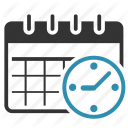

<md-toolbar>
  <div class="topnav-left" [routerLink]="['/']">
    
    <div class="navmenu-title">
      <span>E-Scheduler</span>
    </div>
  </div>
  <div class="navmenu-links">
    <a *ngIf="isLoggedIn()" [routerLink]="['/dashboard']">{{'site.top-navbar.dashboard' | translate | uppercase}}</a>&nbsp;
    <a [routerLink]="['/about', 'Hello world']" [routerLinkActive]="['active']">{{'site.top-navbar.about' | translate | uppercase}}</a>
  </div>

  <span class="demo-fill-remaining"></span>

  <div>
    <user-card class="ripple" *ngIf="isLoggedIn()" [routerLink]="['/profile']"></user-card>
  </div>
  <div>
    <div class="separator" *ngIf="isLoggedIn()"></div>
  </div>
  <div>
    <user-logout></user-logout>
  </div>
  <div class="language-select-container">
    <ul style="padding-top:15px;height:100%;list-style-type:none;padding-left:8px;padding-right:8px;">
      <li class="language-item" *ngFor="let lang of translate.getLangs()">
        
      </li>
    </ul>
  </div>
</md-toolbar>
<md-sidenav-layout>
  <!-- (open)="mybutton.focus()" -->
  <md-sidenav #staticsidenav [opened]="!isLoggedIn()" mode="side" layout-padding class="sidenav-main">
    <h2>Main Sider</h2>
    <br>
    <user-login-form></user-login-form>
    <br><br>
    
  </md-sidenav>
  <div class="container">
    <router-outlet></router-outlet>
  </div>
</md-sidenav-layout>